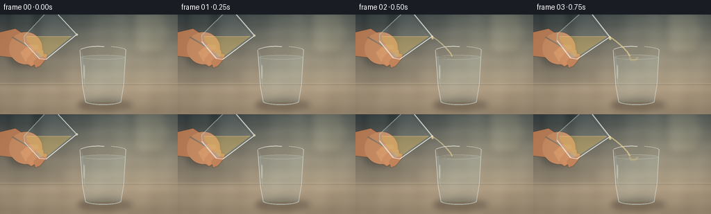
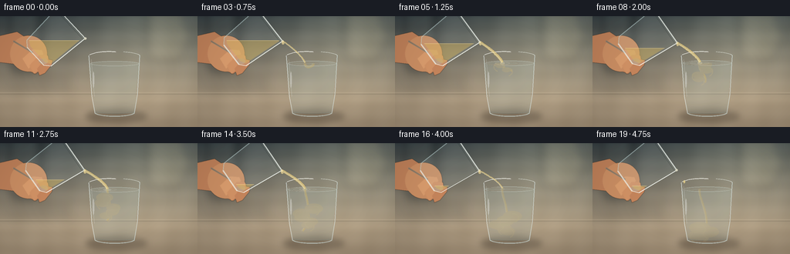

CODING AGENTS AS PIXEL WORLD MODELS
traex/GPT-5.6-Sol · phygen_138
点击播放 · 原生 RGB 像素
逐轮保存的候选
回放视频、检查图与代码变化。
每份候选均可单独播放。实际图片检查记录在下方工具轨迹中。
候选 01播放与检查图
点击播放 · 原生 RGB 像素


展开代码变化
--- 上一保存版本
+++ 本次保存版本
@@ -0,0 +1,250 @@
+from pathlib import Path
+import math
+import numpy as np
+from PIL import Image, ImageDraw, ImageFilter
+import artifact_io
+
+# Deterministic hand-drawn, supersampled procedural animation.
+W, H, N, S = 256, 144, 20, 3
+SW, SH = W*S, H*S
+rng = np.random.default_rng(138)
+
+def sc(v): return int(round(v*S))
+def pts(seq): return [(sc(x), sc(y)) for x,y in seq]
+def rgba_layer(): return Image.new('RGBA', (SW, SH), (0,0,0,0))
+
+def ellipse(d, box, **kw): d.ellipse(tuple(sc(v) for v in box), **kw)
+def line(d, xy, **kw):
+ if 'width' in kw: kw['width']=sc(kw['width'])
+ d.line(pts(xy), **kw)
+def polygon(d, xy, **kw): d.polygon(pts(xy), **kw)
+def rounded(d, box, radius, **kw): d.rounded_rectangle(tuple(sc(v) for v in box), radius=sc(radius), **kw)
+
+def bezier(p0,p1,p2,p3,n=32):
+ out=[]
+ for u in np.linspace(0,1,n):
+ q=1-u
+ out.append((q**3*p0[0]+3*q*q*u*p1[0]+3*q*u*u*p2[0]+u**3*p3[0],
+ q**3*p0[1]+3*q*q*u*p1[1]+3*q*u*u*p2[1]+u**3*p3[1]))
+ return out
+
+def transform(local, center, angle):
+ c,s=math.cos(angle), math.sin(angle)
+ return [(center[0]+x*c-y*s, center[1]+x*s+y*c) for x,y in local]
+
+def base_scene(t):
+ # photographic warm kitchen background and stone counter
+ y,x=np.mgrid[0:SH,0:SW]
+ yy=y/S; xx=x/S
+ top=np.array([55,64,67.],float); bot=np.array([174,157,132.],float)
+ k=np.clip(yy/108,0,1)[...,None]
+ arr=top*(1-k)+bot*k
+ # soft pool of daylight from upper right
+ glow=np.exp(-((xx-203)**2/(2*70**2)+(yy-18)**2/(2*52**2)))[...,None]
+ arr += glow*np.array([46,44,35.])
+ # darker counter below horizon
+ lower=np.clip((yy-96)/48,0,1)[...,None]
+ arr=arr*(1-.22*lower)+np.array([93,74,57.])*(.22*lower)
+ # subtle sensor/stone texture fixed in space
+ tex=(np.sin(xx*.19)+np.sin((xx+yy)*.085)+np.sin(yy*.31))*1.5
+ arr += tex[...,None]
+ im=Image.fromarray(np.uint8(np.clip(arr,0,255)),'RGB').convert('RGBA')
+ # defocused kitchen forms
+ b=rgba_layer(); d=ImageDraw.Draw(b)
+ rounded(d,(13,-10,53,73),10,fill=(27,35,38,105))
+ rounded(d,(18,-4,45,59),7,fill=(107,117,112,32))
+ rounded(d,(191,-15,238,58),12,fill=(235,218,174,28))
+ ellipse(d,(211,8,246,43),fill=(255,233,174,22))
+ rounded(d,(2,79,89,97),3,fill=(57,57,52,35))
+ b=b.filter(ImageFilter.GaussianBlur(sc(6)))
+ im=Image.alpha_composite(im,b)
+ # horizon line
+ l=rgba_layer(); dl=ImageDraw.Draw(l)
+ line(dl,[(0,99),(256,99)],fill=(226,208,180,70),width=.7)
+ line(dl,[(0,101),(256,101)],fill=(50,45,39,45),width=.7)
+ return Image.alpha_composite(im,l)
+
+def draw_target(im, fi, pour_strength):
+ # cast shadow on the countertop
+ sh=rgba_layer(); ds=ImageDraw.Draw(sh)
+ ellipse(ds,(111,122,190,138),fill=(31,24,18,80))
+ ellipse(ds,(126,126,185,134),fill=(25,20,17,60))
+ sh=sh.filter(ImageFilter.GaussianBlur(sc(4)))
+ im=Image.alpha_composite(im,sh)
+
+ glass=rgba_layer(); dg=ImageDraw.Draw(glass)
+ # body tint / refraction
+ polygon(dg,[(115,52),(181,52),(174,126),(123,126)],fill=(202,225,225,26))
+ ellipse(dg,(123,119,174,132),fill=(200,226,226,23))
+ # rear rim first
+ line(dg,bezier((115,51),(126,44),(169,44),(181,51)),fill=(225,241,239,125),width=1.2)
+ line(dg,bezier((116,52),(129,57),(168,57),(180,52)),fill=(70,88,90,65),width=.7)
+
+ # water, level rises during pour
+ level=61.5 - 1.8*min(1, max(0,(fi-2)/14))
+ water_mask=Image.new('L',(SW,SH),0); dm=ImageDraw.Draw(water_mask)
+ polygon(dm,[(117,level),(179,level),(173,125),(124,125)],fill=255)
+ ellipse(dm,(124,119,173,130),fill=255)
+ water=rgba_layer(); dw=ImageDraw.Draw(water)
+ polygon(dw,[(116,level),(180,level),(174,126),(123,126)],fill=(173,215,220,34))
+ # liquid top, animated impact ripples
+ ellipse(dw,(117,level-3.3,180,level+3.2),fill=(194,229,229,28),outline=(221,241,238,90),width=sc(.7))
+ if fi>=2:
+ impact=min(1,(fi-2)/3)*max(.2,pour_strength)
+ for j in range(3):
+ phase=(fi*.58+j*.31)%1
+ rw=5+phase*(18+5*j)
+ box=(139-rw,level-1.4-phase*1.1,139+rw,level+1.4+phase*1.1)
+ ellipse(dw,box,outline=(236,245,232,int(85*(1-phase)*impact)),width=sc(.65))
+ ellipse(dw,(136,level-2.0,142,level+1.8),fill=(236,242,216,int(80*impact)))
+
+ # Vinegar mixing: pale amber descending curls clipped within water.
+ if fi>=3:
+ age=fi-3
+ mix=rgba_layer(); md=ImageDraw.Draw(mix)
+ # central descending jet, then curled buoyant/diffusive tendrils
+ depth=min(54, age*5.0)
+ path=bezier((139,level),(138+2*math.sin(fi*.6),level+10),
+ (151+4*math.sin(fi*.45),level+depth*.65),
+ (143+7*math.sin(fi*.35),level+depth))
+ line(md,path,fill=(218,187,104,90 if fi<16 else 60),width=max(1.2,3.5-age*.08))
+ line(md,[(x-1.2,y) for x,y in path],fill=(255,230,155,42),width=1)
+ for j in range(5):
+ start=max(0,age-j*1.5)
+ if start<=0: continue
+ cy=level+min(60,start*(4.2+j*.2))
+ cx=141+math.sin(fi*.48+j*1.7)*(5+j*1.7)
+ r=2.8+j*.7+start*.18
+ ellipse(md,(cx-r*1.8,cy-r,cx+r*1.8,cy+r),fill=(223,192,112,max(8,int(39-start*1.25))))
+ # little side curl
+ curl=bezier((cx,cy-r/2),(cx+9*(-1 if j%2 else 1),cy-4),
+ (cx+10*(-1 if j%2 else 1),cy+5),(cx+3*(-1 if j%2 else 1),cy+8))
+ line(md,curl,fill=(226,197,119,max(8,int(43-start))),width=1.3)
+ mix=Image.composite(mix,rgba_layer(),water_mask)
+ water=Image.alpha_composite(water,mix)
+
+ im=Image.alpha_composite(im,water)
+ # foreground glass boundaries, asymmetric highlights and thick base
+ fg=rgba_layer(); d=ImageDraw.Draw(fg)
+ line(d,[(115,51),(119,104),(123,126)],fill=(232,244,241,150),width=1.15)
+ line(d,[(181,51),(178,101),(174,126)],fill=(220,237,236,145),width=1.1)
+ line(d,[(118,56),(122,104)],fill=(255,255,250,48),width=.55)
+ line(d,bezier((123,126),(133,131),(164,131),(174,126)),fill=(218,236,233,140),width=1.35)
+ line(d,bezier((124,124),(139,127),(160,127),(173,124)),fill=(87,111,113,60),width=.7)
+ # bright rim glints
+ line(d,bezier((116,50),(125,45.7),(141,45.2),(150,46.2)),fill=(255,255,249,180),width=.9)
+ line(d,bezier((160,46),(174,47),(180,49),(181,51)),fill=(245,252,247,145),width=.8)
+ ellipse(d,(120,72,122,93),fill=(255,255,255,80))
+ im=Image.alpha_composite(im,fg)
+ return im, level
+
+def draw_hand_and_source(im, fi, target_level):
+ # Tilt increases gently at beginning, then holds while liquid empties.
+ tilt_deg=47 + 9*(1-math.exp(-fi/3.7)) - (max(0,fi-16)*.35)
+ ang=math.radians(tilt_deg)
+ center=(70-fi*.06,29.5+fi*.03)
+ outer_local=[(-27,-30),(27,-30),(23,27),(16,33),(-16,33),(-23,27)]
+ inner_local=[(-24,-27),(24,-27),(20.5,25),(14,29),(-14,29),(-20.5,25)]
+ outer=transform(outer_local,center,ang)
+ inner=transform(inner_local,center,ang)
+ lip_local=(27,-30)
+ lip=transform([lip_local],center,ang)[0]
+
+ # hand behind the tumbler
+ hand=rgba_layer(); hd=ImageDraw.Draw(hand)
+ # wrist and palm from left edge
+ polygon(hd,[(-8,27),(22,20),(55,42),(62,61),(46,75),(17,62),(-8,59)],fill=(190,129,91,255))
+ ellipse(hd,(13,25,61,72),fill=(202,143,101,255))
+ # curled fingers around lower half
+ finger_sets=[[(29,55),(42,43),(54,44),(56,49),(45,58),(37,68)],
+ [(38,64),(51,50),(62,51),(63,57),(51,69),(44,75)],
+ [(48,68),(59,55),(68,57),(67,63),(58,74),(51,77)]]
+ cols=[(217,157,111,255),(209,147,103,255),(197,134,94,255)]
+ for p,c in zip(finger_sets,cols): polygon(hd,p,fill=c)
+ # fingernail / skin lights
+ ellipse(hd,(50,55,62,62),fill=(230,176,137,170))
+ line(hd,[(17,32),(42,47)],fill=(238,182,138,80),width=2)
+ hand=hand.filter(ImageFilter.GaussianBlur(sc(.28)))
+ im=Image.alpha_composite(im,hand)
+
+ src=rgba_layer(); sd=ImageDraw.Draw(src)
+ # soft glass body and back rim
+ polygon(sd,outer,fill=(215,232,228,28))
+ line(sd,[outer[0],outer[5],outer[4],outer[3],outer[2],outer[1]],fill=(227,240,236,150),width=1.15)
+ # back/outer opening lines
+ line(sd,[outer[0],outer[1]],fill=(244,250,243,190),width=1.3)
+ line(sd,transform([(-25,-27),(25,-27)],center,ang),fill=(83,95,92,80),width=.65)
+
+ # vinegar volume: liquid is gravity-level and recedes while pouring
+ liquid_mask=Image.new('L',(SW,SH),0); lm=ImageDraw.Draw(liquid_mask)
+ polygon(lm,inner,fill=255)
+ if fi<3: empty=0
+ elif fi<=15: empty=(fi-3)/12
+ else: empty=1
+ surface_y=31.5 + empty*24
+ levmask=Image.new('L',(SW,SH),0); ld=ImageDraw.Draw(levmask)
+ ld.rectangle((0,sc(surface_y),SW,SH),fill=255)
+ liquid_mask=Image.fromarray(np.minimum(np.array(liquid_mask),np.array(levmask)).astype(np.uint8),'L')
+ liq=rgba_layer(); qd=ImageDraw.Draw(liq)
+ qd.rectangle((0,sc(surface_y),SW,SH),fill=(218,183,92,104))
+ # horizontal meniscus emphasized
+ line(qd,[(22,surface_y),(118,surface_y)],fill=(248,220,145,150),width=.75)
+ liq=Image.composite(liq,rgba_layer(),liquid_mask)
+ src=Image.alpha_composite(src,liq)
+ # front highlights and weighted base
+ sd=ImageDraw.Draw(src)
+ line(sd,[outer[1],outer[2],outer[3]],fill=(249,253,246,205),width=1.0)
+ line(sd,[outer[0],outer[5],outer[4]],fill=(199,223,222,140),width=.9)
+ line(sd,[outer[4],outer[3]],fill=(242,248,242,175),width=1.8)
+ # sparkle at pouring lip
+ ellipse(sd,(lip[0]-1.5,lip[1]-1.5,lip[0]+1.5,lip[1]+1.5),fill=(255,251,224,180))
+ im=Image.alpha_composite(im,src)
+
+ # pour stream: ramp up, stable, then taper and droplets
+ if fi<2: strength=0
+ elif fi<5: strength=(fi-1)/4
+ elif fi<=14: strength=1
+ elif fi<=17: strength=(18-fi)/4
+ else: strength=0
+ stream=rgba_layer(); st=ImageDraw.Draw(stream)
+ if strength>0:
+ impact=(139,target_level-1)
+ wob=math.sin(fi*.82)*.7
+ p=bezier((lip[0],lip[1]),(lip[0]+6,lip[1]+3),(136+wob,target_level-10),impact)
+ width=.9+2.4*strength
+ line(st,p,fill=(231,204,129,int(145+50*strength)),width=width)
+ line(st,[(x-.7,y) for x,y in p],fill=(255,248,211,int(105+60*strength)),width=.55)
+ # small bead riding near lip
+ ellipse(st,(lip[0]-1,lip[1],lip[0]+2.2,lip[1]+4.2),fill=(243,220,153,170))
+ elif fi in (18,19):
+ # final separated drip, visibly falling under gravity
+ dy=(fi-18)*8
+ x=lip[0]+8+dy*.25
+ y=lip[1]+7+dy
+ ellipse(st,(x-1.2,y-2,x+1.2,y+2),fill=(241,215,141,180))
+ im=Image.alpha_composite(im,stream)
+ return im, strength
+
+frames=[]
+for fi in range(N):
+ # Determine strength once for water animation.
+ if fi<2: ps=0
+ elif fi<5: ps=(fi-1)/4
+ elif fi<=14: ps=1
+ elif fi<=17: ps=(18-fi)/4
+ else: ps=0
+ im=base_scene(fi)
+ im,level=draw_target(im,fi,ps)
+ im,_=draw_hand_and_source(im,fi,level)
+ # slight warm contact glow in active liquid, plus final color grade
+ im=im.convert('RGB').resize((W,H),Image.Resampling.LANCZOS)
+ arr=np.asarray(im).astype(np.float32)
+ # subtle vignette and cinematic contrast
+ yy,xx=np.mgrid[0:H,0:W]
+ vig=1-0.10*np.clip(((xx-128)/155)**2+((yy-72)/100)**2,0,1)
+ arr=(arr-128)*1.035+128
+ arr*=vig[...,None]
+ frames.append(np.uint8(np.clip(arr,0,255)))
+
+frames=np.stack(frames)
+artifact_io.save(frames, Path(__file__).resolve().parent)
可观测工具轨迹
实际执行的命令与返回图片。
命令 1exit 0
/bin/bash -lc "ls -la && printf '\\n--- prompt.txt ---\\n' && cat prompt.txt && printf '\\n--- GENERATION_RULES.md ---\\n' && cat GENERATION_RULES.md && printf '\\n--- task_spec.json ---\\n' && cat task_spec.json"
命令 2exit 0
/bin/bash -lc "find . -maxdepth 2 -type f -printf '%p\\n' | sort"
命令 3exit 0
/bin/bash -lc "sed -n '1,240p' artifact_io.py"
命令 4exit 0
/bin/bash -lc "cat > generate.py <<'PY'
from pathlib import Path
import math
import numpy as np
from PIL import Image, ImageDraw, ImageFilter
import artifact_io
# Deterministic hand-drawn, supersampled procedural animation.
W, H, N, S = 256, 144, 20, 3
SW, SH = W*S, H*S
rng = np.random.default_rng(138)
def sc(v): return int(round(v*S))
def pts(seq): return [(sc(x), sc(y)) for x,y in seq]
def rgba_layer(): return Image.new('RGBA', (SW, SH), (0,0,0,0))
def ellipse(d, box, **kw): d.ellipse(tuple(sc(v) for v in box), **kw)
def line(d, xy, **kw):
if 'width' in kw: kw['width']=sc(kw['width'])
d.line(pts(xy), **kw)
def polygon(d, xy, **kw): d.polygon(pts(xy), **kw)
def rounded(d, box, radius, **kw): d.rounded_rectangle(tuple(sc(v) for v in box), radius=sc(radius), **kw)
def bezier(p0,p1,p2,p3,n=32):
out=[]
for u in np.linspace(0,1,n):
q=1-u
out.append((q**3*p0[0]+3*q*q*u*p1[0]+3*q*u*u*p2[0]+u**3*p3[0],
q**3*p0[1]+3*q*q*u*p1[1]+3*q*u*u*p2[1]+u**3*p3[1]))
return out
def transform(local, center, angle):
c,s=math.cos(angle), math.sin(angle)
return [(center[0]+x*c-y*s, center[1]+x*s+y*c) for x,y in local]
def base_scene(t):
# photographic warm kitchen background and stone counter
y,x=np.mgrid[0:SH,0:SW]
yy=y/S; xx=x/S
top=np.array([55,64,67.],float); bot=np.array([174,157,132.],float)
k=np.clip(yy/108,0,1)[...,None]
arr=top*(1-k)+bot*k
# soft pool of daylight from upper right
glow=np.exp(-((xx-203)**2/(2*70**2)+(yy-18)**2/(2*52**2)))[...,None]
arr += glow*np.array([46,44,35.])
# darker counter below horizon
lower=np.clip((yy-96)/48,0,1)[...,None]
arr=arr*(1-.22*lower)+np.array([93,74,57.])*(.22*lower)
# subtle sensor/stone texture fixed in space
tex=(np.sin(xx*.19)+np.sin((xx+yy)*.085)+np.sin(yy*.31))*1.5
arr += tex[...,None]
im=Image.fromarray(np.uint8(np.clip(arr,0,255)),'RGB').convert('RGBA')
# defocused kitchen forms
b=rgba_layer(); d=ImageDraw.Draw(b)
rounded(d,(13,-10,53,73),10,fill=(27,35,38,105))
rounded(d,(18,-4,45,59),7,fill=(107,117,112,32))
rounded(d,(191,-15,238,58),12,fill=(235,218,174,28))
ellipse(d,(211,8,246,43),fill=(255,233,174,22))
rounded(d,(2,79,89,97),3,fill=(57,57,52,35))
b=b.filter(ImageFilter.GaussianBlur(sc(6)))
im=Image.alpha_composite(im,b)
# horizon line
l=rgba_layer(); dl=ImageDraw.Draw(l)
line(dl,[(0,99),(256,99)],fill=(226,208,180,70),width=.7)
line(dl,[(0,101),(256,101)],fill=(50,45,39,45),width=.7)
return Image.alpha_composite(im,l)
def draw_target(im, fi, pour_strength):
# cast shadow on the countertop
sh=rgba_layer(); ds=ImageDraw.Draw(sh)
ellipse(ds,(111,122,190,138),fill=(31,24,18,80))
ellipse(ds,(126,126,185,134),fill=(25,20,17,60))
sh=sh.filter(ImageFilter.GaussianBlur(sc(4)))
im=Image.alpha_composite(im,sh)
glass=rgba_layer(); dg=ImageDraw.Draw(glass)
# body tint / refraction
polygon(dg,[(115,52),(181,52),(174,126),(123,126)],fill=(202,225,225,26))
ellipse(dg,(123,119,174,132),fill=(200,226,226,23))
# rear rim first
line(dg,bezier((115,51),(126,44),(169,44),(181,51)),fill=(225,241,239,125),width=1.2)
line(dg,bezier((116,52),(129,57),(168,57),(180,52)),fill=(70,88,90,65),width=.7)
# water, level rises during pour
level=61.5 - 1.8*min(1, max(0,(fi-2)/14))
water_mask=Image.new('L',(SW,SH),0); dm=ImageDraw.Draw(water_mask)
polygon(dm,[(117,level),(179,level),(173,125),(124,125)],fill=255)
ellipse(dm,(124,119,173,130),fill=255)
water=rgba_layer(); dw=ImageDraw.Draw(water)
polygon(dw,[(116,level),(180,level),(174,126),(123,126)],fill=(173,215,220,34))
# liquid top, animated impact ripples
ellipse(dw,(117,level-3.3,180,level+3.2),fill=(194,229,229,28),outline=(221,241,238,90),width=sc(.7))
if fi>=2:
impact=min(1,(fi-2)/3)*max(.2,pour_strength)
for j in range(3):
phase=(fi*.58+j*.31)%1
rw=5+phase*(18+5*j)
box=(139-rw,level-1.4-phase*1.1,139+rw,level+1.4+phase*1.1)
ellipse(dw,box,outline=(236,245,232,int(85*(1-phase)*impact)),width=sc(.65))
ellipse(dw,(136,level-2.0,142,level+1.8),fill=(236,242,216,int(80*impact)))
# Vinegar mixing: pale amber descending curls clipped within water.
if fi>=3:
age=fi-3
mix=rgba_layer(); md=ImageDraw.Draw(mix)
# central descending jet, then curled buoyant/diffusive tendrils
depth=min(54, age*5.0)
path=bezier((139,level),(138+2*math.sin(fi*.6),level+10),
(151+4*math.sin(fi*.45),level+depth*.65),
(143+7*math.sin(fi*.35),level+depth))
line(md,path,fill=(218,187,104,90 if fi<16 else 60),width=max(1.2,3.5-age*.08))
line(md,[(x-1.2,y) for x,y in path],fill=(255,230,155,42),width=1)
for j in range(5):
start=max(0,age-j*1.5)
if start<=0: continue
cy=level+min(60,start*(4.2+j*.2))
cx=141+math.sin(fi*.48+j*1.7)*(5+j*1.7)
r=2.8+j*.7+start*.18
ellipse(md,(cx-r*1.8,cy-r,cx+r*1.8,cy+r),fill=(223,192,112,max(8,int(39-start*1.25))))
# little side curl
curl=bezier((cx,cy-r/2),(cx+9*(-1 if j%2 else 1),cy-4),
(cx+10*(-1 if j%2 else 1),cy+5),(cx+3*(-1 if j%2 else 1),cy+8))
line(md,curl,fill=(226,197,119,max(8,int(43-start))),width=1.3)
mix=Image.composite(mix,rgba_layer(),water_mask)
water=Image.alpha_composite(water,mix)
im=Image.alpha_composite(im,water)
# foreground glass boundaries, asymmetric highlights and thick base
fg=rgba_layer(); d=ImageDraw.Draw(fg)
line(d,[(115,51),(119,104),(123,126)],fill=(232,244,241,150),width=1.15)
line(d,[(181,51),(178,101),(174,126)],fill=(220,237,236,145),width=1.1)
line(d,[(118,56),(122,104)],fill=(255,255,250,48),width=.55)
line(d,bezier((123,126),(133,131),(164,131),(174,126)),fill=(218,236,233,140),width=1.35)
line(d,bezier((124,124),(139,127),(160,127),(173,124)),fill=(87,111,113,60),width=.7)
# bright rim glints
line(d,bezier((116,50),(125,45.7),(141,45.2),(150,46.2)),fill=(255,255,249,180),width=.9)
line(d,bezier((160,46),(174,47),(180,49),(181,51)),fill=(245,252,247,145),width=.8)
ellipse(d,(120,72,122,93),fill=(255,255,255,80))
im=Image.alpha_composite(im,fg)
return im, level
def draw_hand_and_source(im, fi, target_level):
# Tilt increases gently at beginning, then holds while liquid empties.
tilt_deg=47 + 9*(1-math.exp(-fi/3.7)) - (max(0,fi-16)*.35)
ang=math.radians(tilt_deg)
center=(70-fi*.06,29.5+fi*.03)
outer_local=[(-27,-30),(27,-30),(23,27),(16,33),(-16,33),(-23,27)]
inner_local=[(-24,-27),(24,-27),(20.5,25),(14,29),(-14,29),(-20.5,25)]
outer=transform(outer_local,center,ang)
inner=transform(inner_local,center,ang)
lip_local=(27,-30)
lip=transform([lip_local],center,ang)[0]
# hand behind the tumbler
hand=rgba_layer(); hd=ImageDraw.Draw(hand)
# wrist and palm from left edge
polygon(hd,[(-8,27),(22,20),(55,42),(62,61),(46,75),(17,62),(-8,59)],fill=(190,129,91,255))
ellipse(hd,(13,25,61,72),fill=(202,143,101,255))
# curled fingers around lower half
finger_sets=[[(29,55),(42,43),(54,44),(56,49),(45,58),(37,68)],
[(38,64),(51,50),(62,51),(63,57),(51,69),(44,75)],
[(48,68),(59,55),(68,57),(67,63),(58,74),(51,77)]]
cols=[(217,157,111,255),(209,147,103,255),(197,134,94,255)]
for p,c in zip(finger_sets,cols): polygon(hd,p,fill=c)
# fingernail / skin lights
ellipse(hd,(50,55,62,62),fill=(230,176,137,170))
line(hd,[(17,32),(42,47)],fill=(238,182,138,80),width=2)
hand=hand.filter(ImageFilter.GaussianBlur(sc(.28)))
im=Image.alpha_composite(im,hand)
src=rgba_layer(); sd=ImageDraw.Draw(src)
# soft glass body and back rim
polygon(sd,outer,fill=(215,232,228,28))
line(sd,[outer[0],outer[5],outer[4],outer[3],outer[2],outer[1]],fill=(227,240,236,150),width=1.15)
# back/outer opening lines
line(sd,[outer[0],outer[1]],fill=(244,250,243,190),width=1.3)
line(sd,transform([(-25,-27),(25,-27)],center,ang),fill=(83,95,92,80),width=.65)
# vinegar volume: liquid is gravity-level and recedes while pouring
liquid_mask=Image.new('L',(SW,SH),0); lm=ImageDraw.Draw(liquid_mask)
polygon(lm,inner,fill=255)
if fi<3: empty=0
elif fi<=15: empty=(fi-3)/12
else: empty=1
surface_y=31.5 + empty*24
levmask=Image.new('L',(SW,SH),0); ld=ImageDraw.Draw(levmask)
ld.rectangle((0,sc(surface_y),SW,SH),fill=255)
liquid_mask=Image.fromarray(np.minimum(np.array(liquid_mask),np.array(levmask)).astype(np.uint8),'L')
liq=rgba_layer(); qd=ImageDraw.Draw(liq)
qd.rectangle((0,sc(surface_y),SW,SH),fill=(218,183,92,104))
# horizontal meniscus emphasized
line(qd,[(22,surface_y),(118,surface_y)],fill=(248,220,145,150),width=.75)
liq=Image.composite(liq,rgba_layer(),liquid_mask)
src=Image.alpha_composite(src,liq)
# front highlights and weighted base
sd=ImageDraw.Draw(src)
line(sd,[outer[1],outer[2],outer[3]],fill=(249,253,246,205),width=1.0)
line(sd,[outer[0],outer[5],outer[4]],fill=(199,223,222,140),width=.9)
line(sd,[outer[4],outer[3]],fill=(242,248,242,175),width=1.8)
# sparkle at pouring lip
ellipse(sd,(lip[0]-1.5,lip[1]-1.5,lip[0]+1.5,lip[1]+1.5),fill=(255,251,224,180))
im=Image.alpha_composite(im,src)
# pour stream: ramp up, stable, then taper and droplets
if fi<2: strength=0
elif fi<5: strength=(fi-1)/4
elif fi<=14: strength=1
elif fi<=17: strength=(18-fi)/4
else: strength=0
stream=rgba_layer(); st=ImageDraw.Draw(stream)
if strength>0:
impact=(139,target_level-1)
wob=math.sin(fi*.82)*.7
p=bezier((lip[0],lip[1]),(lip[0]+6,lip[1]+3),(136+wob,target_level-10),impact)
width=.9+2.4*strength
line(st,p,fill=(231,204,129,int(145+50*strength)),width=width)
line(st,[(x-.7,y) for x,y in p],fill=(255,248,211,int(105+60*strength)),width=.55)
# small bead riding near lip
ellipse(st,(lip[0]-1,lip[1],lip[0]+2.2,lip[1]+4.2),fill=(243,220,153,170))
elif fi in (18,19):
# final separated drip, visibly falling under gravity
dy=(fi-18)*8
x=lip[0]+8+dy*.25
y=lip[1]+7+dy
ellipse(st,(x-1.2,y-2,x+1.2,y+2),fill=(241,215,141,180))
im=Image.alpha_composite(im,stream)
return im, strength
frames=[]
for fi in range(N):
# Determine strength once for water animation.
if fi<2: ps=0
elif fi<5: ps=(fi-1)/4
elif fi<=14: ps=1
elif fi<=17: ps=(18-fi)/4
else: ps=0
im=base_scene(fi)
im,level=draw_target(im,fi,ps)
im,_=draw_hand_and_source(im,fi,level)
# slight warm contact glow in active liquid, plus final color grade
im=im.convert('RGB').resize((W,H),Image.Resampling.LANCZOS)
arr=np.asarray(im).astype(np.float32)
# subtle vignette and cinematic contrast
yy,xx=np.mgrid[0:H,0:W]
vig=1-0.10*np.clip(((xx-128)/155)**2+((yy-72)/100)**2,0,1)
arr=(arr-128)*1.035+128
arr*=vig[...,None]
frames.append(np.uint8(np.clip(arr,0,255)))
frames=np.stack(frames)
artifact_io.save(frames, Path(__file__).resolve().parent)
PY
python generate.py
ls -lh pixels.npz index.html inspection.png frames/00.png frames/19.png"命令 5exit 0
/bin/bash -lc "python - <<'PY'
import numpy as np
from PIL import Image
z=np.load('pixels.npz')['pixels']
print('pixels',z.shape,z.dtype,'frames',len(list(__import__('pathlib').Path('frames').glob('*.png'))))
ims=np.stack([np.asarray(Image.open(f'frames/{i:02d}.png')) for i in range(20)])
print('rgb',ims.shape,ims.dtype,'range',ims.min(),ims.max())
print('mean abs deltas',np.abs(np.diff(ims.astype(float),axis=0)).mean(axis=(1,2,3)).round(3).tolist())
PY"视觉工具实际返回图片 1

视觉工具实际返回图片 2

保存候选 1 份；完成命令 5 次；可验证图片返回 2 张。原始 API 响应与完整日志保留在本地。